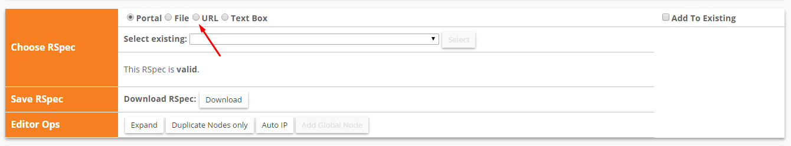
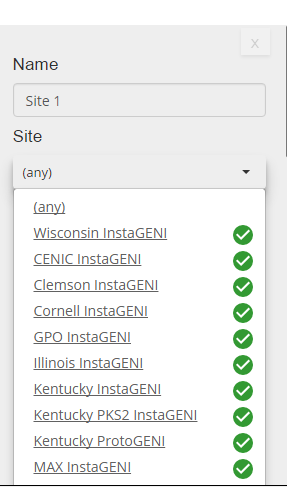
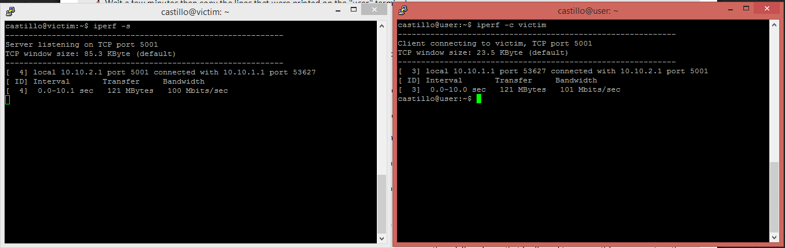

- Network Traffic & Denial of Service Lab -
Lab Goals
- Getting used to work with GENI
- Learn how to connect to your GENI nodes using PuTTY
- Obtain an experiential perspective of a DDoS attack
- Learn how to save network traffic logs in a pcap file to read with Wireshark
- Use Wireshark to generate a graph from your network traffic logs
Prerequisites
- You will need basic command line knowledge to complete this lab. Codecademy has a great tutorial on this topic.
- In this lab, you will implement a computer network attack, Denial of Service (DoS). This attack is designed to deprive services, such as web content, from legitimate users. From Wikipedia: "In computing, a denial-of-service attack is a cyber-attack where the perpetrator seeks to make a machine or network resource unavailable to its intended users by temporarily or indefinitely disrupting services of a host connected to the Internet." You can watch a video about this attack and read more about recent DDoS attacks using the Internet of Things interconnected devices.
- To analyze the computer network traffic from this attack, we will use tool called Wireshark. Here is a quick video tutorial for this tool.
- Iperf is a tool that is used through command line to generate computer network traffic that resembles regular usage of a computer network. You can read more about this tool here.
- Hping3 is another computer networking tool that you will use. This tool, with the proper command line options, can generate a flood of computer network traffic that can overwhelm and take over networking resources. You can read more about this tool here.
Setup
- If your instructor has already provided you with a topology, you may move on to Part 1. Otherwise, complete the following instructions to set up your topology.
- Create a new slice under the corresponding project
- Click the "Add Resources" button located in the page of your newly created slice
- Click the URL option

- Paste on the input box the following link: http://mountrouidoux.people.cofc.edu/CyberPaths/files/denialOfServiceLevel1.txt
- Then click on the "Select" button
- Your topology should now load and look like similar to this
- Now click on "Clemson InstaGENI" and select one of aggregates on the left that is available and then reserve the resources

- Then wait some time until all your resources are ready, you can check the status of these by going to the page of your slice. If the background color of a given node is grey, it means that such node is not available yet; if it is green, it means that it is ready. Just like so:
Part 1: Retrieving your computer network topology, describing it and understanding it.
- Log into the GENI Portal using your login credentials. Go to "Home", "Slices", and click on the slice that corresponds to your lab. Describe the names of the machines that you see in the topology and how they are connected.
- Based on the names on each machine that is in your topology, describe what you think each machine will do. (You will need to make an educated guess.)
- The OVS in your topology is going to play the role of a network switch. Describe in your own words what you think a network switch is and how it works
Part 2: SSHing/Logging into your nodes.
- SSH stands for Secure Shell. SSH is a UNIX-based command interface and protocol for securely getting access to a remote computer. It is widely used by network administrators to control web servers and other kinds of servers remotely.
- What is a network protocol and why do we need a protocol like SSH? (You may search for the answer but remember to include sources.)
- Take a look at your topology. You should see four machines. These machines include "user", "victim", "attacker" and "OVS".
- "user" machine: acts as a regular user on a network; like a user that browses the internet.
- "victim" machine: acts as a victim of a Denial of Service (DoS) attack.
- "attacker" machine: acts as a malicious user and creates and sends DoS attack to the victim.
- On the GENI Portal, click on the machine in your topology called "user". You will need to open an SSH connection to this user node If you do not know how to do this, follow the "HelloGENI" tutorial for Windows users or Mac users.
- Repeat the process and open ssh connection with all the nodes in your topology.
Part 3: Running your first experiment.
- Go to the terminal that corresponds to the "user" machine. Type: ping victim and hit enter on your keyboard.
- Press both the Ctrl key and C key together. This will cancel the ping command as we do not want this to run forever. Copy three lines that were printed on the terminal after you pressed enter.
- Go to the terminal that corresponds to the "victim" machine. Type:
sudo tcpdump -i eth1 and hit enter on your keyboard.
- Go to the terminal that corresponds to the "user" machine. Type:
ping victim and hit enter on your keyboard.
- After a few seconds, press both the Ctrl key and C key together on both terminals.
- Take a look at the terminal that corresponds to the "victim" machine. Copy the lines that were printed on the "victim" terminal. Do you think these lines have any relation to the command entered on the "user" machine terminal?
- Take a look at the terminal that corresponds to the "user" machine. Copy the lines that were printed on the "user" terminal. What time units are used in the ping statistics?
- What is RTT? (You may search the abbreviation but include sources.)
- Do the ping statistics from 7 indicate a fast or slow network? (You may search network speeds for comparison but include sources.)
- ***The ping command is a query, or a question, to another computer on a network. In this case the question is sent from the "user" machine to the "victim" machine to determine whether there is a connection.***
Part 4: Running an attack, observing user traffic, collecting and analyzing data.
- Go to the terminal that corresponds to the "victim" machine. Type:
iperf -s and hit enter on your keyboard.
- Go to the terminal that corresponds to the "user" machine. Type:
iperf -c victim and hit enter on your keyboard.
- Iperf is software that tests the performance of a machine; how fast it serves network requests. The "victim" machine is running a server and the "user" machine is running a client with requests to the server on the "victim" machine.
- Wait a few minutes then copy the lines that were printed on the "user" terminal.
- Go to the terminal that corresponds to the "victim" machine and press both the Ctrl key and C key together.
- Type:
ping ovs and hit enter on your keyboard. Note the numbers and periods inside the parenthesis. There should be 4 numbers separated by 3 periods. For example, inside the parenthesis for me contains "10.10.2.2".
- Go to the terminal that corresponds to the "OVS" machine. Type:
ifconfig and hit enter.
- Find the corresponding numbers from above in step 5 and remember the specific "eth" it is paired with. For example, after running ifconfig, I am looking for 10.10.2.2 and I see that it is located beside "eth2". The "eth" you see on your screen that corresponds to your specific number is what you will type. For example, I would use eth2. I would type:
sudo tcpdump -i eth2 -vv and hit enter.
- Complete step 1 - 2 for a few seconds. What do you observe on the "OVS" machine? Where does this traffic come from?
- Go to the terminal that corresponds to the "attacker" machine. Type:
sudo hping3 -S --flood victim and hit enter on your keyboard. After a few seconds, press both the Ctrl key and C key together. What is happening in the terminal that corresponds to the "OVS" machine?
- Does the traffic generated from the "attacker" machine look like it goes through at a faster pace than the traffic that you generated in task 3?
- The first part of the commands above, "sudo", makes you a root user. You are now the privileged user that is allowed to run anything you want on the machine.
- The "tcpdump" command, calls a program that monitors the network traffic that is entering the “victim” machine. The ending part of the "tcpdump" command is the network interface that is being monitored.
- The "hping3" command was used to run a flooding attack towards the "victim" machine. This attack is called a Denial of Service (DoS) attack and is designed to bring the network down by sending it useless traffic.
Part 5: Collecting Data from GENI machines.
- We will now collect normal traffic and DoS traffic data and compare them. First, go to the terminal that corresponds to the "OVS" machine and press both the Ctrl key and C key together. Now in the "OVS" machine terminal, Type:
sudo tcpdump -i eth1 -s0 -w capture1.pcap (where eth1 corresponds to the same "eth" you used in Task 4, Step 8) and hit enter on your keyboard. This command takes the tcpdump monitored traffic and writes it in a file called capture1.pcap.
- Go to the terminal that corresponds to the "victim" machine and press both the Ctrl key and C key together. Now in the "victim" machine terminal, Type:
iperf -s and hit enter on your keyboard. When you use iperf -s you are running an iperf server. Next you will run and iperf client on the “user” machine and generate some regular traffic
- Go to the terminal that corresponds to the "user" machine. Type:
iperf -c victim and hit enter on your keyboard.
- Go to the terminal that corresponds to the "attacker" machine. Type:
sudo hping3 -S --flood victim and hit enter on your keyboard. After 30 seconds, press both the Ctrl key and C key together on all your terminal windows.
- Now we will analyze the information gathered after generating an attack.
- If you are a windows user, drag and drop the capture file from your "OVS" machine to your computer using WinSCP. You can find instructions on how to install and use WinSCP in the embedded link.